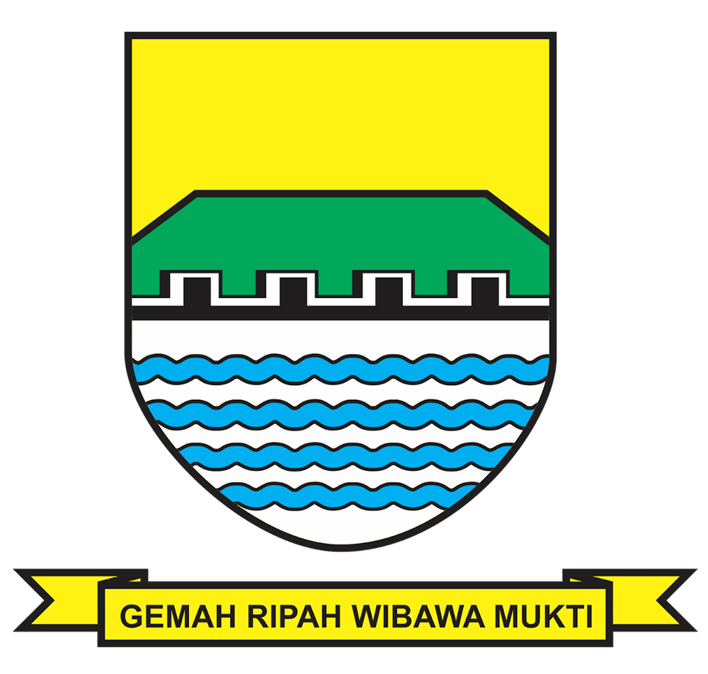
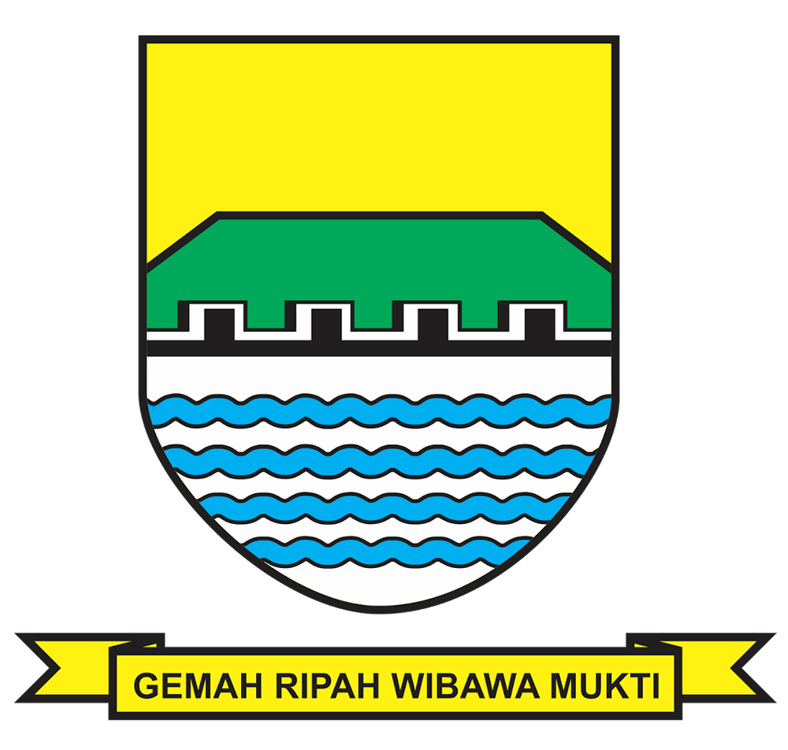
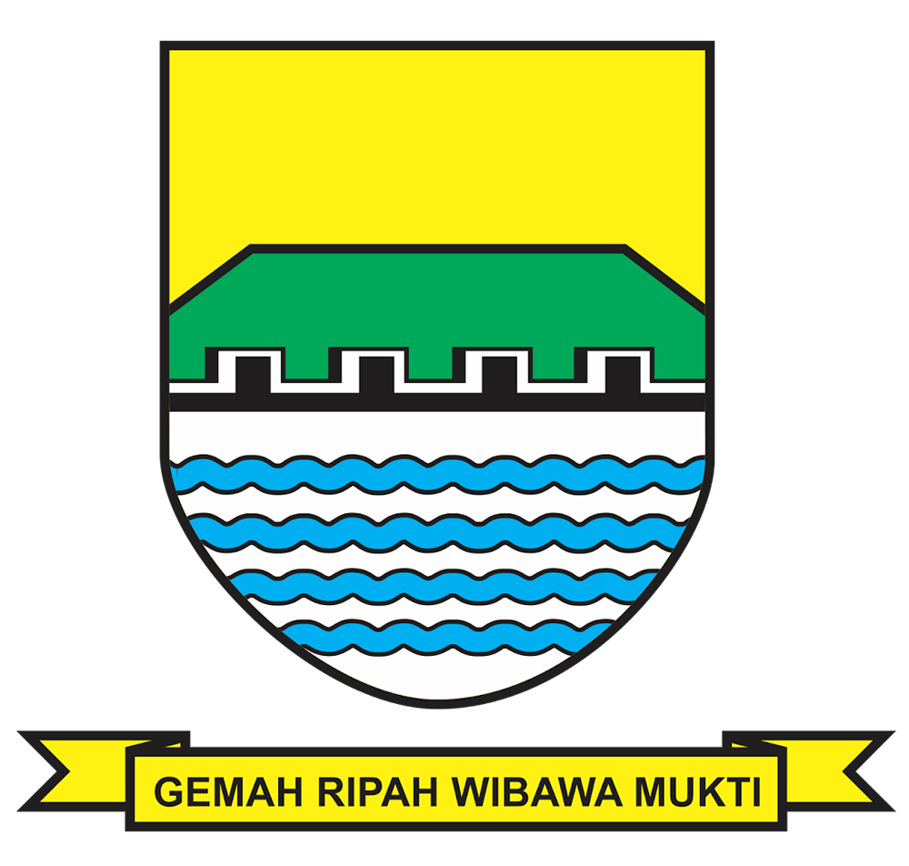
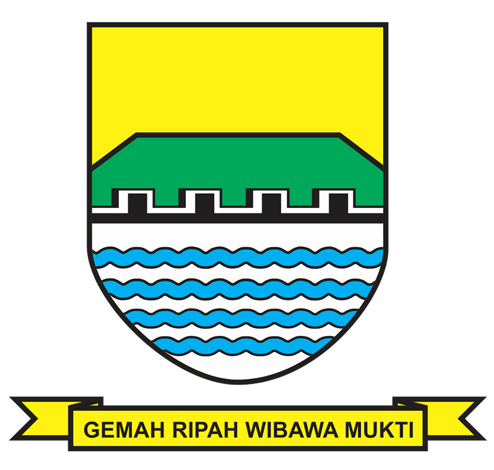

Temukan informasi spasial menarik dari Kota Bandung melalui WebGIS interaktif ini.

Kota terbesar di bagian selatan Pulau Jawa dengan populasi lebih dari 2,5 juta jiwa.
Kepadatan mencapai 15.051 jiwa/km², tertinggi kedua setelah Jakarta.
Menyajikan karakteristik geografis wilayah Kota Bandung secara menyeluruh.

Shakti Aulia Alamsyah ( Bandung, 25 September 2005) merupakan seorang mahasiswa semester 4. berkuliah di Universitas Pendidikan Indonesia, Shakti menjalani hidupnya seperti layaknya manusia biasa. Alasan saya masuk saig adalah karena ingin berkuliah di UPI, karena pengen di bandung aja. sedikit menyesal, tetapi apalah daya, sudah semester 4 tinggal beberapa semester lagi. ya hidup segan, mati hayu aja..